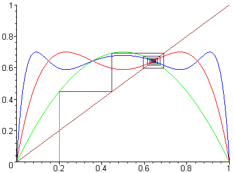
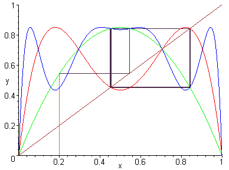

The non-linear difference equationLogistic Difference Equation
is called logistic difference equation where a > 0 and 0 <= X <= 1.xn+1 = a xn (1 - xn )
Clearly it will have a positive equilibrium point if and only if the equation aX(1-X) = X
Therefore we have two equilibrium points: X = 0 and X =(a-1)/a
Let us study the stability of each equilibrium point using the function g(X) = a*X(1-X).
Case 1:
X = 0
g'(X) = a(1 - X) - a*X = a - 2a*X
g'(X = 0) = a
X = 0 is a sink if 0 < a < 1
X = 0 is a source if a > 1
Case 2:
X =(a-1)/a
g'(X = (a - 1)/a) = a - 2a*(a-1)/a = a - 2a + 2 =
2 - a
Let find now the interval in which this equilibrium point is a sink by solving |g'(X)| < 1:
-1 < g'(X = (a - 1)/a) < 1 i.e. a < 3 and a > 1
Therefore X = (a - 1)/a is a sink if 1 < a < 3
X = (a - 1)/a is a source if a > 3
Next picture shows the convergence of a solution...

Let now find the periodic solution of period 2 by solving
the equation g(g(X)) = X
where g(X)= a*X(1-X).
We will have two solutions if a > 3 ; X1 and X2.
X1 = [(a + 1) - ((a + 1)(a - 3))1/2]/2a and X2 = [(a + 1) + ((a + 1)(a - 3))1/2]/2a
Since X > 0; X1
> 0 and X2 > 0; g(X1)
= X2 and g(X2)
= X1, the stability of
these two solutions will be determined by:
d = g'(X1)*g'(X2)
We are going to have a sink if -1 < d < 1 i.e. -1 < -a^2 +2a +4 < 1
a > 3 and a < 1 + (6)^(1/2)
In conclusion the periodic solution is
a sink if 3 < a < 1 +[6]1/2
and a source if a > 1 +[6]^(1/2)
when a = 1 + [6]^(1/2) we have g'(X) = a-2a*X g''(X) = -2a and g'''(X) = 0
g'(X1) = -1+[2]^(1/2) X1 is a sink
g'(X2) = -1-[2]^(1/2) X2 is a source

Interesting links for use further studying the Logistic Equation:
Logistic
Model (outstanding general introduction)
The Logistic
Difference Equation
The
Logistic Equation and its associated map
Commentary
on Chaos Theory, Sensitive Dependence, and the Logistic Equation (article)
The
Logistic Equation (as a population model)
Logistic
Population Model (more detailed description)
Discrete
Logistic Equation (as a biological model)
Deterministic
Logistic Map
Java Applets
(phase plane analysis and bifurcation diagrams)
Click here for an animated period
doubling route to chaos:
Now let study the global stability of the logistic equation.
{kind=link}